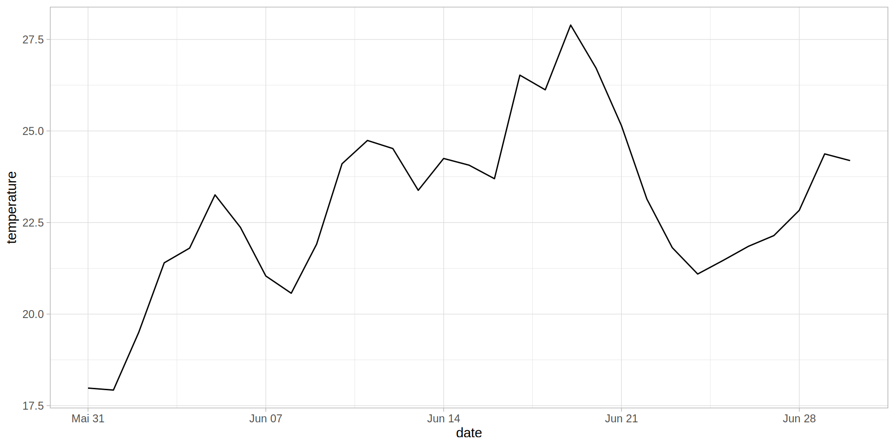

Are bats in forests bigger?
Plot surveys
Field survery data on a plot
| F1 |
forest |
7 |
| F2 |
forest |
2 |
| A1 |
arable |
4 |
Time Series
- quasi continuous measurements
- measurement interval
- climate, soil, remote sensing
| 12:00 |
18.3 |
| 12:15 |
18.5 |
| 12:30 |
18.6 |
Time Series
Visualization of time series data
Species Lists
Vegetation of F1
| Digitalis purpurea |
4 |
| Galium odoratum |
25 |
| Fagus Sylvatica |
20 |
Geospatial Data
- defined by explicit location on the earth surface
- information attached to coordinates
Geospatial Data: Tree locations
| Pyrus |
Albachten |
397691.4 |
5751120 |
| Tilia |
Wolbeck |
414997.0 |
5752184 |
| Quercus |
Kinderhaus-West |
403580.2 |
5760710 |
| Malus |
Nienberge |
399527.8 |
5763386 |
Data for monitoring
 {width = 50%}
{width = 50%}
Other data sources
- Lab / Field experiments
- Individuum based information (e.g. traits)
- Data repositories
- Socio-Economic data (also useful for landscape ecology)
- Open Data from paper
- …
 {width = 50%}
{width = 50%}